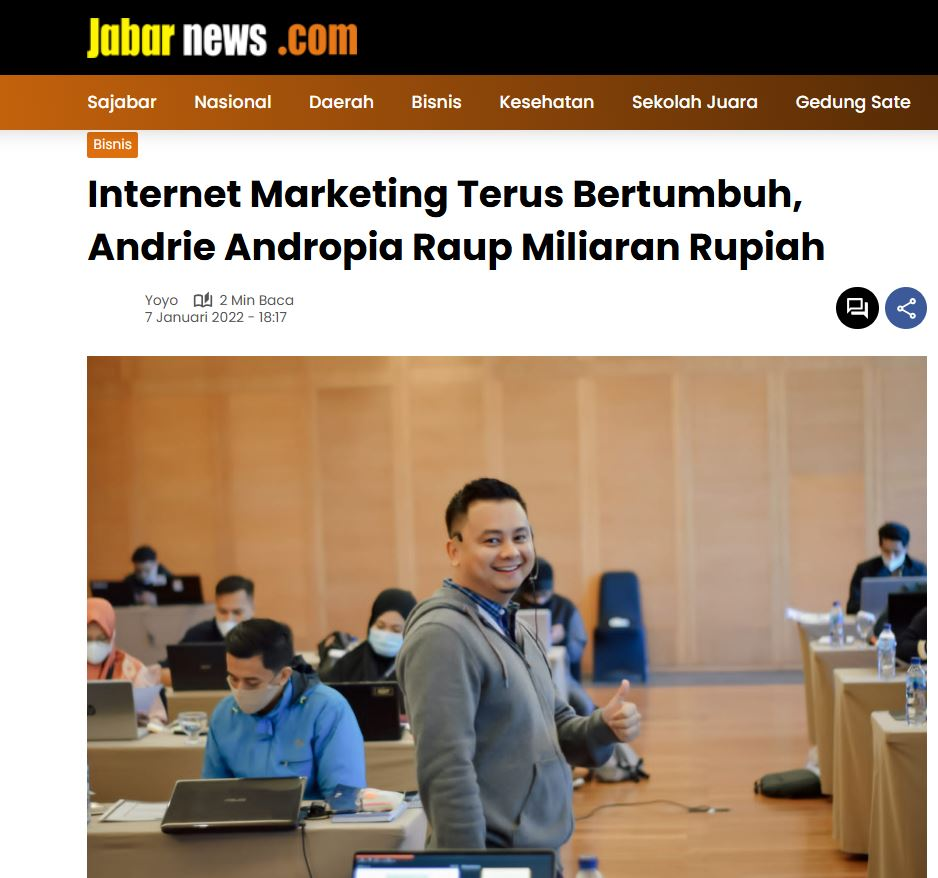
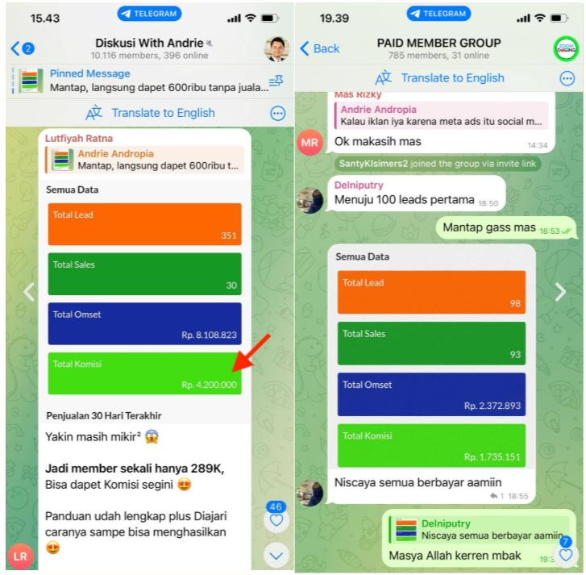
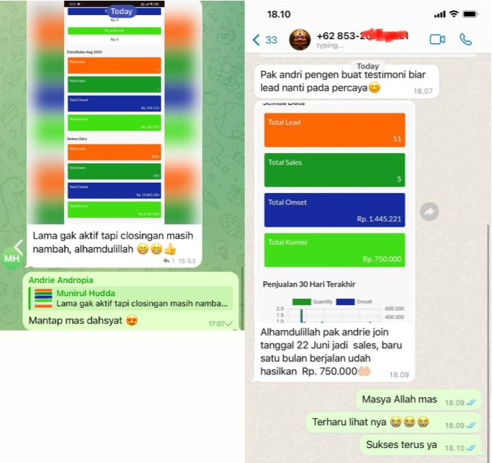
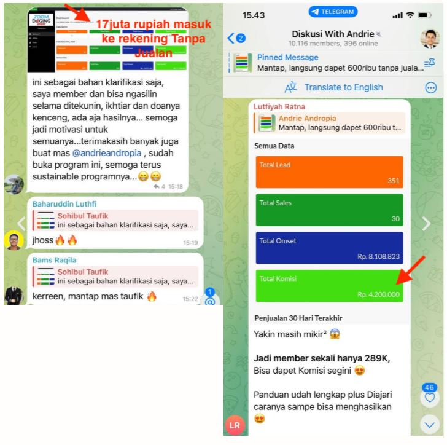
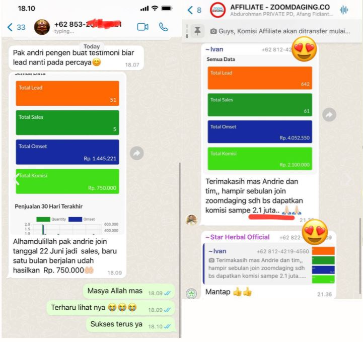

"Saya ajarin caranya, mau?..."

"Seperti mereka!"

00
Hari
00
Jam
00
Menit
00
Detik
Telah diliput media nasional


Masuk Poadcast Helmy Yahya

Sampai jumpa di ZOOM 😉

Andrie Andropia




Klik Ini Untuk Daftar Affiliate Gratis
Copyright © AndrieZone.co